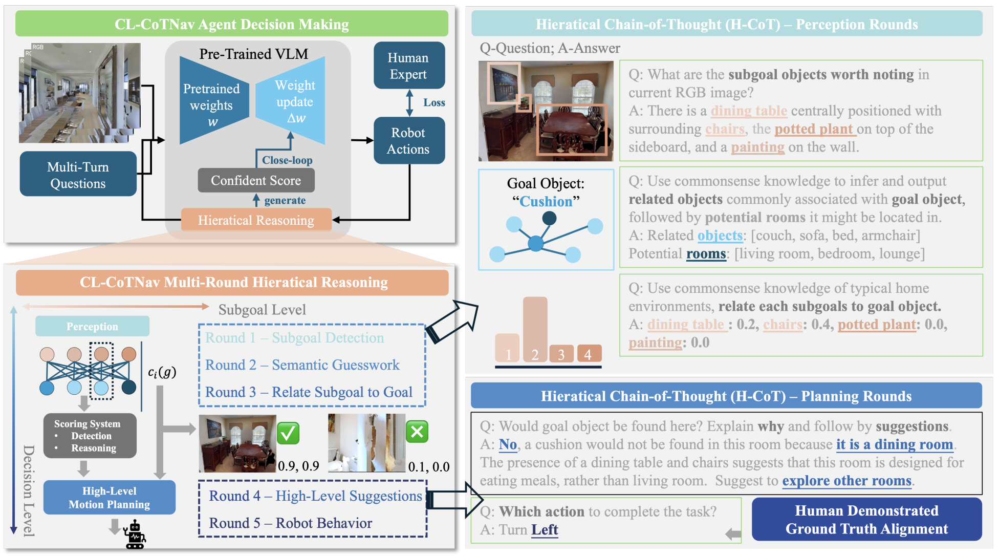
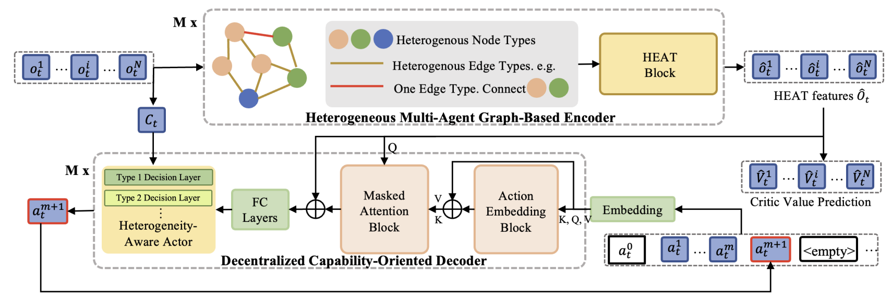
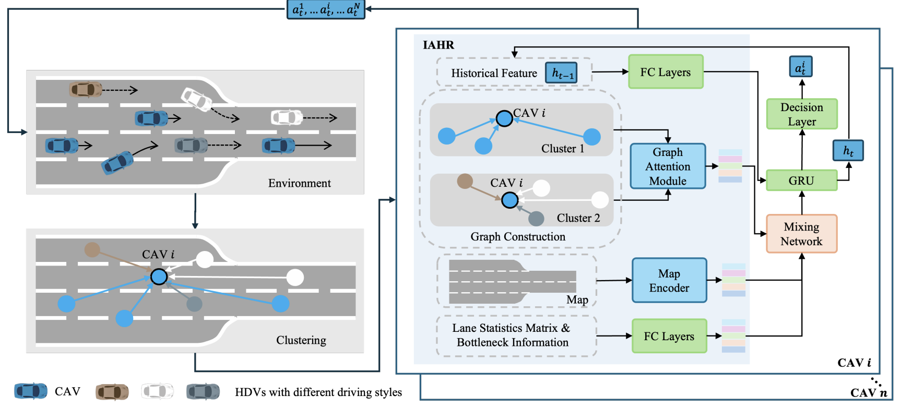
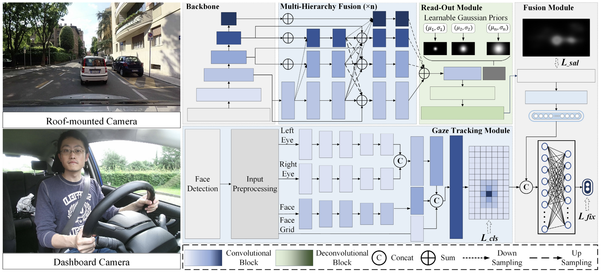

|
Yuxin Cai
Hi there! I’m a Ph.D. student in the Automated Driving and Human-Machine System Lab at
Nanyang Technological University (NTU), where I’m advised by Prof. Chen Lv.
I’m also an AGS scholar in the Robotics and Autonomous Systems department, co-supervised by
Dr. Wei-Yun Yau at the Institute for Infocomm Research (I²R), A*STAR.
Right now, I’m visiting the Safe AI Lab at Carnegie Mellon University,
hosted by Prof. Ding Zhao.
Before starting my Ph.D., I completed my B.Eng. (Hons) in Mechanical Engineering at NTU,
where I specialized in Robotics and Mechatronics.
My research interests lie in robot learning, with an emphasis on generalization across diverse tasks and
environments. I am particularly interested in how agents can acquire transferable and scalable policies that
remain robust under distribution shifts, unseen task variations, and dynamic multi-agent settings. My recent work
explores hierarchical reasoning and vision-language grounding to enable more adaptive, interpretable, and
generalizable decision-making in complex real-world contexts.
Email /
CV /
Scholar /
Twitter /
Github
|
|
News
2025.04 I will be joining the Safe AI Lab at CMU as a visiting student.
|
|

|
CL-CoTNav: Closed-Loop Hierarchical Chain-of-Thought for Zero-Shot Object-Goal Navigation with Vision-Language Models
Yuxin Cai, Xiangkun He, Maonan Wang, Hongliang Guo, Wei-Yun Yau, Chen Lv
arXiv, 2025
A vision-language model (VLM)-driven framework that integrates structured chain-of-thought reasoning and
closed-loop feedback to enable zero-shot generalization in object navigation tasks.
|
|

|
Transformer-based Multi-Agent Reinforcement Learning for Generalization of Heterogeneous Multi-Robot Cooperation
Yuxin Cai, Xiangkun He, Hongliang Guo, Wei-Yun Yau, Chen Lv
IEEE/RSJ International Conference on Intelligent Robots and Systems (IROS), 2024
(Oral Presentation)
We propose a novel transformer-based multi-agent reinforcement learning framework that enables generalizable and cooperative behavior among heterogeneous robot teams across diverse task settings.
|
|

|
Interaction-Aware Hierarchical Representation of Multi-Vehicle Reinforcement Learning for Cooperative Control in Dense Mixed Traffic
Yuxin Cai, Zhengxuan Liu, Xiangkun He, Zhiqiang Zuo, Wei-Yun Yau, Chen Lv
IEEE Intelligent Transportation Systems Conference (ITSC), 2024
(Oral Presentation)
We introduce a hierarchical multi-agent reinforcement learning framework that models both inter-vehicle interactions and traffic-level dynamics to achieve robust and cooperative control for autonomous vehicles in dense, heterogeneous traffic scenarios.
|
|

|
Context-Aware Driver Attention Estimation Using Multi-Hierarchy Saliency Fusion With Gaze Tracking
Zhongxu Hu, Yuxin Cai, Qinghua Li, Kui Su, Chen Lv
IEEE Transactions on Intelligent Transportation Systems (T-ITS), 2024
We propose a context-aware driver attention estimation framework that fuses gaze tracking, saliency detection, and semantic scene understanding across multiple hierarchical levels to improve prediction accuracy in real-world driving scenarios.
|
Journal Reviewer
- IEEE Transactions on Intelligent Vehicles (T-IV), 2024
- IEEE Transactions on Vehicular Technology (T-VT), 2023
- IEEE Robotics and Automation Letters (RA-L), 2023-2024
Conference Reviewer
- IEEE International Conference on Robotics and Automation (ICRA), 2024
- IEEE/RSJ International Conference on Intelligent Robots and Systems (IROS), 2023-2025
- IEEE Intelligent Transportation Systems Conference (ITSC) 2024-2025
|
|
{kind=link}